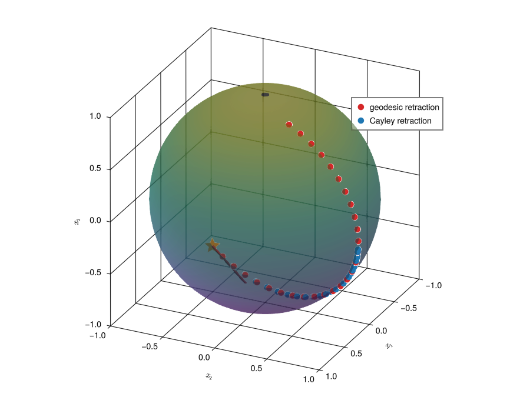
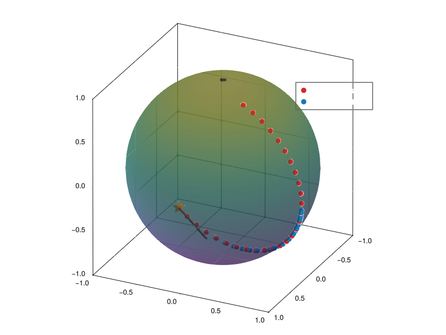
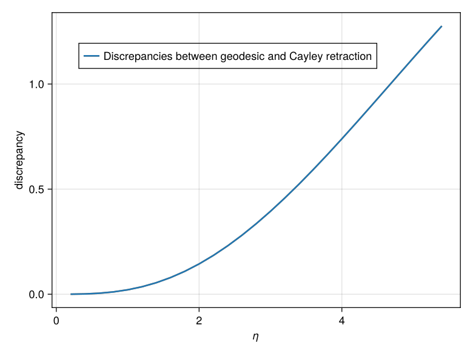
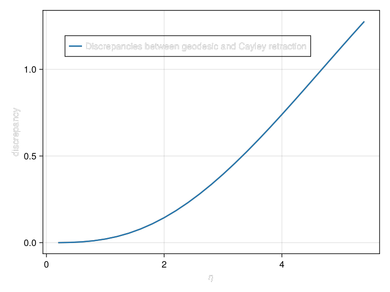

Retractions
In practice we usually do not solve the geodesic equation exactly in each optimization step (even though this is possible and computationally feasible), but prefer approximations that are called "retractions" [22] for numerical stability. The definition of a retraction in GeometricMachineLearning is slightly different from how it is usually defined in textbooks [1, 22]. We discuss these differences here.
Classical Retractions
By "classical retraction" we here mean the textbook definition.
A classical retraction is a smooth map
\[R: T\mathcal{M}\to\mathcal{M}:(x,v)\mapsto{}R_x(v),\]
such that each curve $c(t) := R_x(tv)$ is a local approximation of a geodesic, i.e. the following two conditions hold:
- $c(0) = x$ and
- $c'(0) = v.$
Perhaps the most common example for matrix manifolds is the Cayley retraction. It is a retraction for many matrix Lie groups [1, 37, 38].
The Cayley retraction for $V\in{}T_\mathbb{I}G\equiv\mathfrak{g}$ is defined as
\[\mathrm{Cayley}(V) = \left(\mathbb{I} - \frac{1}{2}V\right)^{-1}\left(\mathbb{I} +\frac{1}{2}V\right).\]
We show that the Cayley transform is a retraction for $G = SO(N)$ at $\mathbb{I}\in{}SO(N)$:
Proof
The Cayley transform trivially satisfies $\mathrm{Cayley}(\mathbb{O}) = \mathbb{I}$. So what we have to show is the second condition for a retraction and that $\mathrm{Cayley}(V)\in{}SO(N)$. For this take $V\in\mathfrak{so}(N).$ We then have
\[\frac{d}{dt}\bigg|_{t = 0}\mathrm{Cayley}(tV) = \frac{d}{dt}\bigg|_{t = 0}\left(\mathbb{I} - \frac{1}{2}tV\right)^{-1}\left(\mathbb{I} +\frac{1}{2}tV\right) = \frac{1}{2}V - \frac{1}{2}V^T = V,\]
which satisfies the second condition. We further have
\[\frac{d}{dt}\bigg|_{t = 0}(\mathrm{Cayley}(tV))^T\mathrm{Cayley}(tV) = (\frac{1}{2}V - \frac{1}{2}V^T)^T + \frac{1}{2}V - \frac{1}{2}V^T = 0.\]
This proofs that the Cayley transform maps to $SO(N)$.
We should mention that the factor $\frac{1}{2}$ is sometimes left out in the definition of the Cayley transform when used in different contexts. But it is necessary for defining a retraction as without it the second condition is not satisfied.
We can also use the Cayley retraction at a different point than the identity $\mathbb{I}.$ For this consider $\bar{A}\in{}SO(N)$ and $\bar{B}\in{}T_{\bar{A}}SO(N) = \{\bar{B}\in\mathbb{R}^{N\times{}N}: \bar{A}^T\bar{B} + \bar{B}^T\bar{A} = \mathbb{O}\}$. We then have $\bar{A}^T\bar{B}\in\mathfrak{so}(N)$ and
\[ \overline{\mathrm{Cayley}}: T_{\bar{A}}SO(N) \to SO(N), \bar{B} \mapsto \bar{A}\mathrm{Cayley}(\bar{A}^T\bar{B}),\]
is a retraction $\forall{}\bar{A}\in{}SO(N)$.
As a retraction is always an approximation of the geodesic map, we now compare the cayley retraction for the example we introduced along Riemannian manifolds:
η_increments = 0.2 : 0.2 : 5.4
Δ_increments = [Δ * η for η in η_increments]
Y_increments_geodesic = [geodesic(Y, Δ_increment) for Δ_increment in Δ_increments]
Y_increments_cayley = [cayley(Y, Δ_increment) for Δ_increment in Δ_increments] 
We see that for small $\Delta$ increments the Cayley retraction seems to match the geodesic retraction very well, but for larger values there is a notable discrepancy. We can plot this discrepancy directly:
zip_ob = zip(Y_increments_geodesic, Y_increments_cayley, axes(Y_increments_geodesic, 1))
discrepancies = [norm(Y_geo_inc - Y_cay_inc) for (Y_geo_inc, Y_cay_inc, _) in zip_ob]
nothing 
In GeometricMachineLearning
The way we use retractions[1] in GeometricMachineLearning is slightly different from their classical definition:
Given a section $\lambda:\mathcal{M}\to{}G,$ where $\mathcal{M}$ is a homogeneous space, a retraction is a map $\mathrm{Retraction}:\mathfrak{g}^\mathrm{hor}\to{}G$ such that
\[\Delta \mapsto \lambda(Y)\mathrm{Retraction}(\lambda(Y)^{-1}\Omega(\Delta)\lambda(Y))E,\]
is a classical retraction.
This map $\mathrm{Retraction}$ is also what was visualized in the figure on the general optimization framework. We now discuss how the geodesic retraction (exponential map) and the Cayley retraction are implemented in GeometricMachineLearning.
Retractions for Homogeneous Spaces
Here we harness special properties of homogeneous spaces to obtain computationally efficient retractions for the Stiefel manifold and the Grassmann manifold. This is also discussed in e.g. [23, 37].
The geodesic retraction is a retraction whose associated curve is also the unique geodesic. For many matrix Lie groups (including $SO(N)$) geodesics are obtained by simply evaluating the exponential map [22, 39]:
The geodesic on a compact matrix Lie group $G$ with bi-invariant metric for $\bar{B}\in{}T_{\bar{A}}G$ is simply
\[\gamma(t) = \exp(t\cdot{}\bar{B}\bar{A}^{-1})\bar{A} = A\exp(t\cdot{}\bar{A}^{-1}\bar{B}^n),\]
where $\exp:\mathfrak{g}\to{}G$ is the matrix exponential map.
The last equality in the equation above is a result of:
\[\begin{aligned} \exp(\bar{A}^{-1}\hat{B}\bar{A}) = \sum_{k=1}^\infty\frac{1}{k!}(\bar{A}^{-1}\hat{B}\bar{A})^k & = \sum_{k=1}^\infty \frac{1}{k!}\underbrace{(\bar{A}^{-1}\hat{B}\bar{A})\cdots(A^{-1}\hat{B}\bar{A})}_{\text{$k$ times}} \\ & = \sum_{k=1}^\infty \frac{1}{k!} \bar{A}^{-1} \hat{B}^k \bar{A} = \bar{A}^{-1}\exp(\hat{B})\bar{A}. \end{aligned}\]
Because $SO(N)$ is compact and we furnish it with the canonical metric, i.e.
\[ g:T_{\bar{A}}G\times{}T_{\bar{A}}G \to \mathbb{R}, (B_1, B_2) \mapsto \mathrm{Tr}(B_1^TB_2) = \mathrm{Tr}((B_1\bar{A}^{-1})^T(B_2\bar{A}^{-1})),\]
its geodesics are thus equivalent to the exponential maps. We now use this observation to obtain an expression for the geodesics on the Stiefel manifold. We use the following theorem from [39, Proposition 25.7]:
The geodesics for a naturally reductive homogeneous space $\mathcal{M}$ starting at $Y$ are given by:
\[\gamma_{\Delta}(t) = \exp(t\cdot\Omega(\Delta))Y,\]
where the $\exp$ is the exponential map for the Lie group $G$ corresponding to $\mathcal{M}$.
The theorem requires the homogeneous space to be naturally reductive:
A homogeneous space is called naturally reductive if the following two conditions hold:
- $\bar{A}^{-1}\bar{B}\bar{A}\in\mathfrak{g}^\mathrm{hor}$ for every $\bar{B}\in\mathfrak{g}^\mathrm{hor}$ and $\bar{A}\in\exp(\mathfrak{g}^\mathrm{ver}$),
- $g([X, Y]^\mathrm{hor}, Z) = g(X, [Y, Z]^\mathrm{hor})$ for all $X, Y, Z \in \mathfrak{g}^\mathrm{hor}$,
where $[X, Y]^\mathrm{hor} = \Omega(XYE - YXE)$. If only the first condition holds the homogeneous space is called reductive (but not naturally reductive).
We state here without proof that the Stiefel manifold and the Grassmann manifold are naturally reductive. We can however provide empirical evidence here:
B̄ = rand(SkewSymMatrix, 6) # ‚àà ùî§
Ā = exp(B̄ - StiefelLieAlgHorMatrix(B̄, 3)) # ‚àà exp(ùµõ·µâ ≥)
X = rand(StiefelLieAlgHorMatrix, 6, 3) # ‚àà ùî§ ∞·µí ≥
Y = rand(StiefelLieAlgHorMatrix, 6, 3) # ‚àà ùî§ ∞·µí ≥
Z = rand(StiefelLieAlgHorMatrix, 6, 3) # ‚àà ùî§ ∞·µí ≥
Ā' * X * Ā # this has to be in ùî§ ∞·µí ≥ for St(3, 6) to be reductive6√ó6 Matrix{Float64}:
0.0 -0.914247 -0.387374 -0.650933 -0.741877 -0.7678
0.914247 0.0 -0.771916 -0.454759 -0.869684 -0.80972
0.387374 0.771916 0.0 -0.924238 -0.292897 -0.749455
0.650933 0.454759 0.924238 0.0 0.0 0.0
0.741877 0.869684 0.292897 0.0 0.0 0.0
0.7678 0.80972 0.749455 0.0 0.0 0.0verifies the first property and
ad ∞·µí ≥(X, Y) = StiefelLieAlgHorMatrix(X * Y - Y * X, 3)
tr(ad ∞·µí ≥(X, Y)' * Z) ‚âà tr(X' * ad ∞·µí ≥(Y, Z))trueverifies the second.
In GeometricMachineLearning we always work with elements in $\mathfrak{g}^\mathrm{hor}$ and the Lie group $G$ is always $SO(N)$. We hence use:
\[ \gamma_\Delta(t) = \exp(\lambda(Y)\lambda(Y)^{-1}\Omega(\Delta)\lambda(Y)\lambda(Y)^{-1})Y = \lambda(Y)\exp(\lambda(Y)^{-1}\Omega(\Delta)\lambda(Y))E.\]
Based on this we define the maps:
\[\mathtt{geodesic}: \mathfrak{g}^\mathrm{hor} \to G, \bar{B} \mapsto \exp(\bar{B}),\]
and
\[\mathtt{cayley}: \mathfrak{g}^\mathrm{hor} \to G, \bar{B} \mapsto \mathrm{Cayley}(\bar{B}),\]
where $\bar{B} = \lambda(Y)^{-1}\Omega(\Delta)\lambda(Y)$. These expressions for geodesic and cayley are the ones that we typically use in GeometricMachineLearning for computational reasons. We show how we can utilize the sparse structure of $\mathfrak{g}^\mathrm{hor}$ for computing the geodesic retraction and the Cayley retraction (i.e. the expressions $\exp(\bar{B})$ and $\mathrm{Cayley}(\bar{B})$ for $\bar{B}\in\mathfrak{g}^\mathrm{hor}$). Similar derivations can be found in [37, 40, 41].
Further note that, even though the global section $\lambda:\mathcal{M} \to G$ is not unique, the final geodesic $\gamma_\Delta(t) = \lambda(Y)\exp(\lambda(Y)^{-1}\Omega(\Delta)\lambda(Y))E$ does not depend on the particular section we choose.
The Geodesic Retraction
An element $\bar{B}$ of $\mathfrak{g}^\mathrm{hor}$ can be written as:
\[\bar{B} = \begin{bmatrix} A & -B^T \\ B & \mathbb{O} \end{bmatrix} = \begin{bmatrix} \frac{1}{2}A & \mathbb{I} \\ B & \mathbb{O} \end{bmatrix} \begin{bmatrix} \mathbb{I} & \mathbb{O} \\ \frac{1}{2}A & -B^T \end{bmatrix} =: B'(B'')^T,\]
where we exploit the sparse structure of the array, i.e. it is a multiplication of a $N\times2n$ with a $2n\times{}N$ matrix.
We further use the following:
\[ \begin{aligned} \exp(B'(B'')^T) & = \sum_{n=0}^\infty \frac{1}{n!} (B'(B'')^T)^n = \mathbb{I} + \sum_{n=1}^\infty \frac{1}{n!} B'((B'')^TB')^{n-1}(B'')^T \\ & = \mathbb{I} + B'\left( \sum_{n=1}^\infty \frac{1}{n!} ((B'')^TB')^{n-1} \right)B'' =: \mathbb{I} + B'\mathfrak{A}(B', B'')B'', \end{aligned}\]
where we defined $\mathfrak{A}(B', B'') := \sum_{n=1}^\infty \frac{1}{n!} ((B'')^TB')^{n-1}.$ Note that evaluating $\mathfrak{A}$ relies on computing products of small matrices of size $2n\times2n.$ We do this by relying on a simple Taylor expansion (see the docstring for GeometricMachineLearning.ùîÑ).
The final expression we obtain is:
\[\exp(\bar{B}) = \mathbb{I} + B' \mathfrak{A}(B', B'') (B'')^T\]
The Cayley Retraction
For the Cayley retraction we leverage the decomposition of $\bar{B} = B'(B'')^T\in\mathfrak{g}^\mathrm{hor}$ through the Sherman-Morrison-Woodbury formula:
\[(\mathbb{I} - \frac{1}{2}B'(B'')^T)^{-1} = \mathbb{I} + \frac{1}{2}B'(\mathbb{I} - \frac{1}{2}B'(B'')^T)^{-1}(B'')^T\]
So what we have to compute the inverse of:
\[\mathbb{I} - \frac{1}{2}\begin{bmatrix} \mathbb{I} & \mathbb{O} \\ \frac{1}{2}A & -B^T \end{bmatrix}\begin{bmatrix} \frac{1}{2}A & \mathbb{I} \\ B & \mathbb{O} \end{bmatrix} = \begin{bmatrix} \mathbb{I} - \frac{1}{4}A & - \frac{1}{2}\mathbb{I} \\ \frac{1}{2}B^TB - \frac{1}{8}A^2 & \mathbb{I} - \frac{1}{4}A \end{bmatrix}.\]
By leveraging the sparse structure of the matrices in $\mathfrak{g}^\mathrm{hor}$ we arrive at the following expression for the Cayley retraction (similar to the case of the geodesic retraction):
\[\mathrm{Cayley}(\bar{B}) = \mathbb{I} + \frac{1}{2} B' \left(\mathbb{I}_{2n} - \frac{1}{2} (B'')^T B'\right)^{-1} (B'')^T \left(\mathbb{I} + \frac{1}{2} \bar{B}\right),\]
where we have abbreviated $\mathbb{I} := \mathbb{I}_N.$ We conclude with a remark:
As mentioned previously the Lie group $SO(N)$, i.e. the one corresponding to the Stiefel manifold and the Grassmann manifold, has a bi-invariant Riemannian metric associated with it: $(B_1,B_2)\mapsto \mathrm{Tr}(B_1^TB_2)$. For other Lie groups (e.g. the symplectic group) the situation is slightly more difficult.
One of such Lie groups is the group of symplectic matrices [37]; for this group the expressions presented here are more complicated.
Library Functions
GeometricMachineLearning.geodesic — Methodgeodesic(B̄::StiefelLieAlgHorMatrix)Compute the geodesic of an element in StiefelLieAlgHorMatrix.
Implementation
Internally this is using:
\[\mathbb{I} + B'\mathfrak{A}(B', B'')B'',\]
with
\[\bar{B} = \begin{bmatrix} A & -B^T \\ B & \mathbb{O} \end{bmatrix} = \begin{bmatrix} \frac{1}{2}A & \mathbb{I} \\ B & \mathbb{O} \end{bmatrix} \begin{bmatrix} \mathbb{I} & \mathbb{O} \\ \frac{1}{2}A & -B^T \end{bmatrix} =: B'(B'')^T.\]
This is using a computationally efficient version of the matrix exponential $\mathfrak{A}$.
GeometricMachineLearning.geodesic — Methodgeodesic(B̄::GrassmannLieAlgHorMatrix)Compute the geodesic of an element in GrassmannLieAlgHorMatrix.
This is equivalent to the method of geodesic for StiefelLieAlgHorMatrix.
GeometricMachineLearning.cayley — Methodcayley(B̄::StiefelLieAlgHorMatrix)Compute the Cayley retraction of B.
Implementation
Internally this is using
\[\mathrm{Cayley}(\bar{B}) = \mathbb{I} + \frac{1}{2} B' (\mathbb{I}_{2n} - \frac{1}{2} (B'')^T B')^{-1} (B'')^T (\mathbb{I} + \frac{1}{2} B),\]
with
\[\bar{B} = \begin{bmatrix} A & -B^T \\ B & \mathbb{O} \end{bmatrix} = \begin{bmatrix} \frac{1}{2}A & \mathbb{I} \\ B & \mathbb{O} \end{bmatrix} \begin{bmatrix} \mathbb{I} & \mathbb{O} \\ \frac{1}{2}A & -B^T \end{bmatrix} =: B'(B'')^T,\]
i.e. $\bar{B}$ is expressed as a product of two $N\times{}2n$ matrices.
GeometricMachineLearning.cayley — Methodcayley(B̄::GrassmannLieAlgHorMatrix)Compute the Cayley retraction of B.
This is equivalent to the method of cayley for StiefelLieAlgHorMatrix.
GeometricMachineLearning.cayley — Methodcayley(Y::Manifold, Δ)Take as input an element of a manifold Y and a tangent vector in Δ in the corresponding tangent space and compute the Cayley retraction.
In different notation: take as input an element $x$ of $\mathcal{M}$ and an element of $T_x\mathcal{M}$ and return $\mathrm{Cayley}(v_x).$
Examples
using GeometricMachineLearning
Y = StiefelManifold([1. 0. 0.;]' |> Matrix)
Δ = [0. .5 0.;]' |> Matrix
Y₂ = cayley(Y, Δ)
Y₂' * Y₂ ≈ [1.;]
# output
trueSee the example in [geodesic(::Manifold{T}, ::AbstractMatrix{T}) where T].
GeometricMachineLearning.ùîÑ ‚Äî MethodùîÑ(A)Compute $\mathfrak{A}(A) := \sum_{n=1}^\infty \frac{1}{n!} (A)^{n-1}.$
Implementation
This uses a Taylor expansion that iteratively adds terms with
while norm(Aⁿ) > ε
mul!(A_temp, Aⁿ, A)
Aⁿ .= A_temp
rmul!(Aⁿ, T(inv(n)))
ùîÑA += Aⁿ
n += 1
enduntil the norm of Aⁿ becomes smaller than machine precision. The counter n in the above algorithm is initialized as 2 The matrices Aⁿ and ùîÑ are initialized as the identity matrix.
GeometricMachineLearning.ùîÑ ‚Äî MethodùîÑ(B̂, B̄)Compute $\mathfrak{A}(B', B'') := \sum_{n=1}^\infty \frac{1}{n!} ((B'')^TB')^{n-1}.$
This expression has the property $\mathbb{I} + B'\mathfrak{A}(B', B'')(B'')^T = \exp(B'(B'')^T).$
Examples
using GeometricMachineLearning
using GeometricMachineLearning: ùîÑ
import Random
Random.seed!(123)
B = rand(StiefelLieAlgHorMatrix, 10, 2)
B̂ = hcat(vcat(.5 * B.A, B.B), vcat(one(B.A), zero(B.B)))
B̄ = hcat(vcat(one(B.A), zero(B.B)), vcat(-.5 * B.A, -B.B))
one(B̂ * B̄') + B̂ * ùîÑ(B̂, B̄) * B̄' ‚âà exp(Matrix(B))
# output
trueReferences
- [22]
- P.-A. Absil, R. Mahony and R. Sepulchre. Optimization algorithms on matrix manifolds (Princeton University Press, Princeton, New Jersey, 2008).
- [37]
- T. Bendokat and R. Zimmermann. The real symplectic Stiefel and Grassmann manifolds: metrics, geodesics and applications, arXiv preprint arXiv:2108.12447 (2021).
- [39]
- B. O'neill. Semi-Riemannian geometry with applications to relativity (Academic press, New York City, New York, 1983).
- 1Classical retractions are also defined in
GeometricMachineLearningunder the same name, i.e. there is e.g. a methodcayley(::StiefelLieAlgHorMatrix)and a methodcayley(::StiefelManifold, ::AbstractMatrix)(the latter being the classical retraction); but the user is strongly discouraged from using classical retractions as these are computationally inefficient.